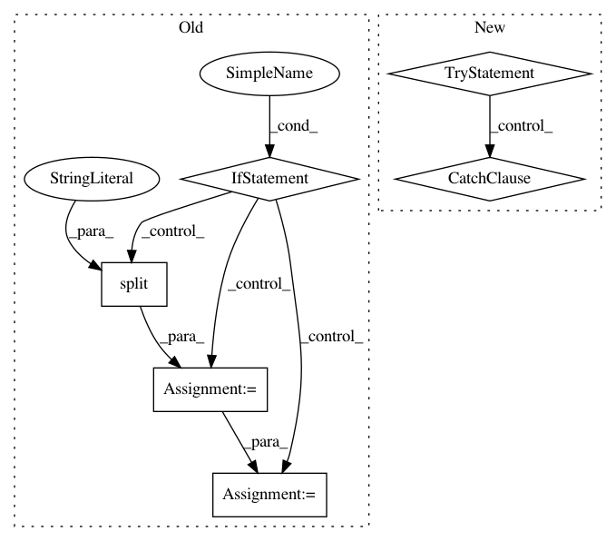

fb50688c503567c5db6207e45e2c5e2ee1ad33df,tgen/features.py,Features,parse_feature_spec,#Features#Any#,197
Before Change
features = {}
for feat in spec:
label, func_name = re.split(r"[:\s]+", feat, 1)
if func_name == "prob":
features[label] = prob
elif func_name == "bias":
features[label] = bias
else:
func_name, func_params = re.split(r"[:\s]+", func_name, 1)
func_params = re.split(r"[,\s]+", func_params)
func_scope = func_params[0]
func_params = func_params[1:]
feat_func = None
scope_func = partial(find_nodes, scope=func_scope.split("+"))
// node features
if func_name.lower() == "same_as_current":
feat_func = partial(same_as_current, scope_func=scope_func, attrib=func_params[0])
elif func_name.lower() == "value":
feat_func = partial(value, scope_func=scope_func, attrib=func_params[0])
elif func_name.lower() == "presence":
feat_func = partial(presence, scope_func=scope_func, attrib=func_params[0])
elif func_name.lower() == "dai_cooc":
feat_func = partial(dai_cooc, scope_func=scope_func, attrib=func_params[0])
// tree shape features
elif func_name.lower() == "depth":
feat_func = partial(depth, scope_func=scope_func)
elif func_name.lower() == "max_children":
feat_func = partial(max_children, scope_func=scope_func)
elif func_name.lower() == "nodes_per_dai":
feat_func = partial(nodes_per_dai, scope_func=scope_func)
elif func_name.lower() == "rep_nodes_per_rep_dai":
feat_func = partial(rep_nodes_per_rep_dai, scope_func=scope_func)
elif func_name.lower() == "rep_nodes":
feat_func = partial(rep_nodes, scope_func=scope_func)
else:
raise Exception("Unknown feature function:" + feat)
features[label] = feat_func
return features
def get_features(self, node, context, feats=None):
Return features for the given node. Accumulates features from other nodes
After Change
for feat in spec:
label, func_name = re.split(r"[:\s]+", feat, 1)
func_params = ""
try: // parse parameters if there are any (otherwise default to empty)
func_name, func_params = re.split(r"[:\s]+", func_name, 1)
func_params = re.split(r"[,\s]+", func_params)
except:
pass
feat_func = None
// bias
if func_name.lower() == "bias":
feat_func = bias
In pattern: SUPERPATTERN
Frequency: 3
Non-data size: 6
Instances
Project Name: UFAL-DSG/tgen
Commit Name: fb50688c503567c5db6207e45e2c5e2ee1ad33df
Time: 2014-08-25
Author: odusek@ufal.mff.cuni.cz
File Name: tgen/features.py
Class Name: Features
Method Name: parse_feature_spec
Project Name: aliyun/aliyun-odps-python-sdk
Commit Name: 75a850f38cceab2d05ef975677c3feefd7a83a69
Time: 2018-04-25
Author: wenjun.swj@alibaba-inc.com
File Name: odps/models/resource.py
Class Name: TableResource
Method Name: get_source_table
Project Name: analysiscenter/batchflow
Commit Name: c472f856ac60d0fff63b90642d912d7e0db1c7dd
Time: 2017-11-16
Author: rhudor@gmail.com
File Name: dataset/models/base.py
Class Name: BaseModel
Method Name: get_from_config